Awaken · Heal · Transform
Functional yoga, sound healing and meditation with Kush Arora. Small batches, personal attention, and a calm studio to come back to.
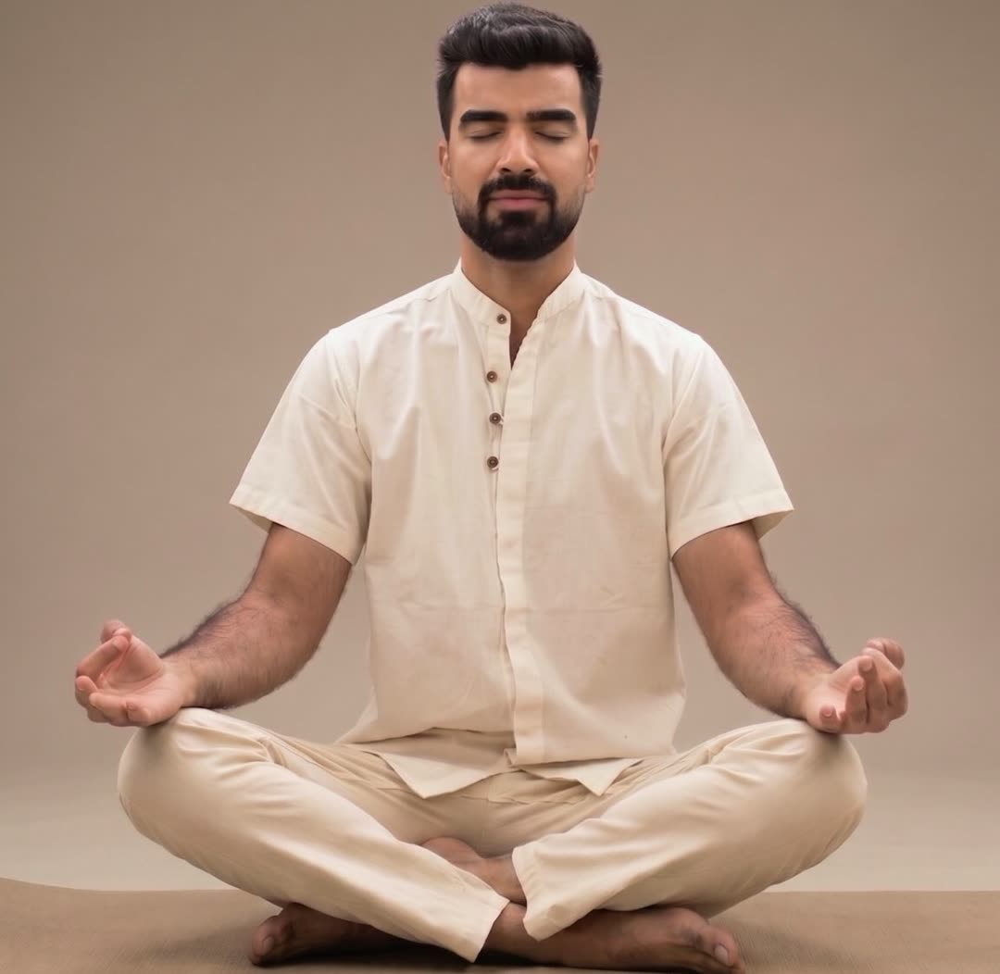
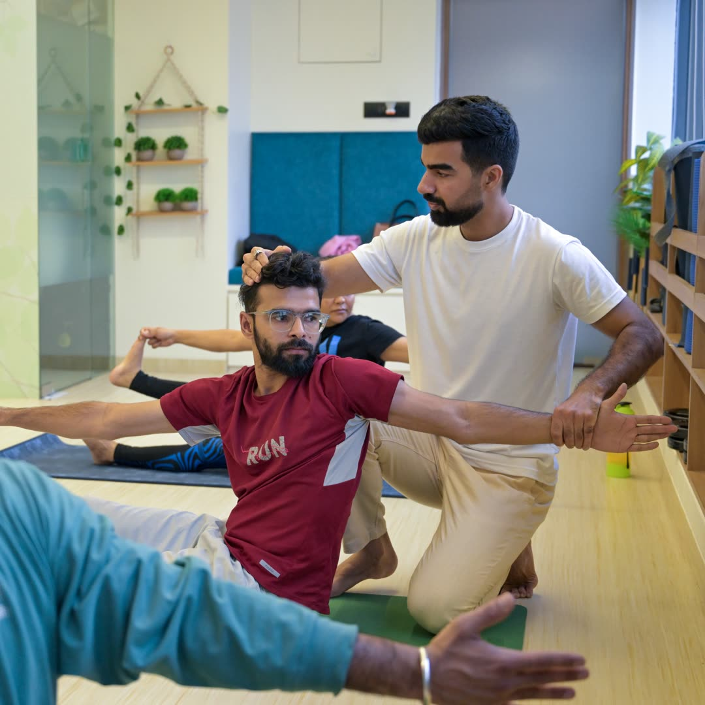
Kush Arora
Healing Mystic is Kush’s studio: guiding every movement, correcting every detail, and helping you understand your body a little better. Students describe a tailored approach that builds asanas step by step alongside strength training.
Jinali Shah, Google review
Beyond the mat, Kush leads sound healing with candle meditation, Tratak sessions and corporate wellness programmes.
Talk to KushThe Pancha Kosha
Healing Mystic’s new logo is inspired by the five layers of human existence. Tap a layer to see how a practice works on it.
maya
Ways to practise
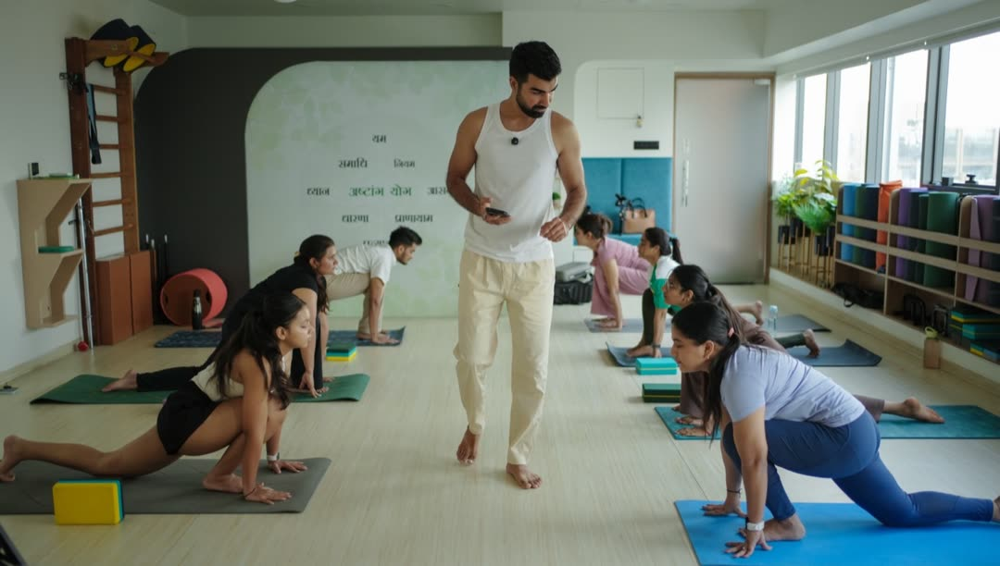
Group yoga
Guided sessions for strength, flexibility, breathwork and relaxation. Beginner friendly.
Sound healing
Sound healing and candle meditation in one session, a completely new layer of stillness.
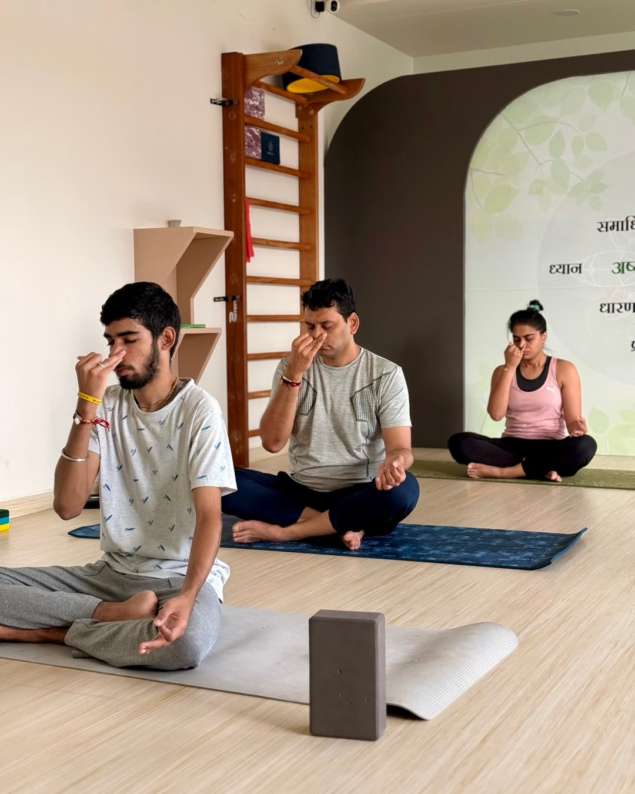
Breath & Tratak
Pranayama, breathing with awareness, and Tratak meditation for focus.
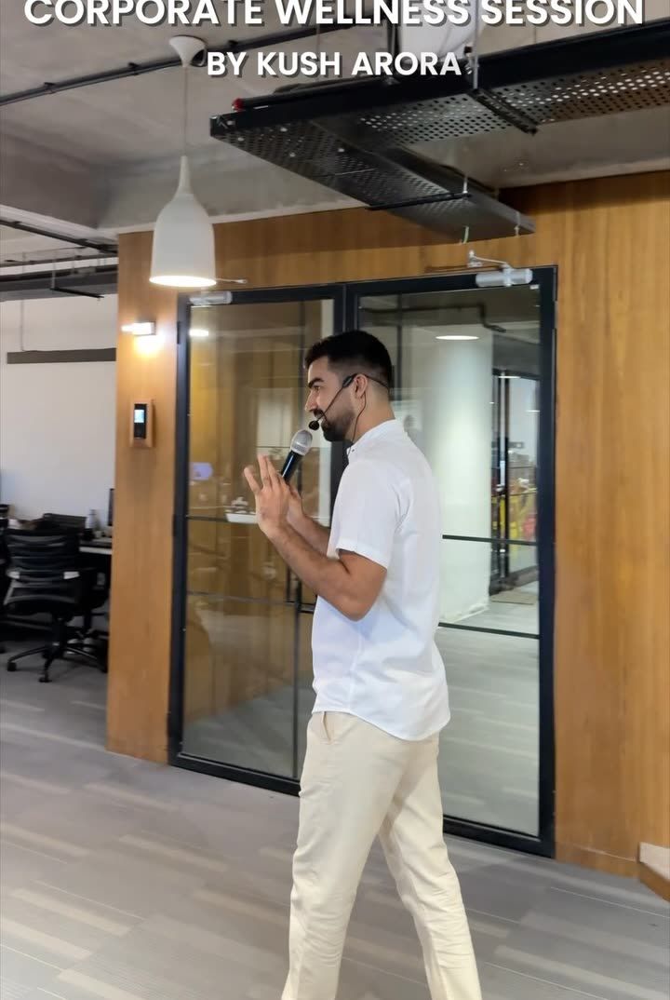
Corporate yoga
Mobility, conscious breathing and a nervous-system reset for teams.
Pick your time, we’ll save your mat
Monday to Friday, from Healing Mystic’s own batch post. Choose a slot and what you’re here for, and the message is ready to send.
Book a trial classFrom the studio
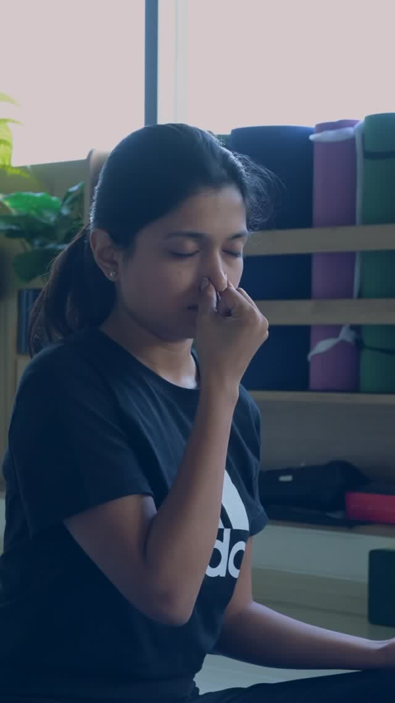
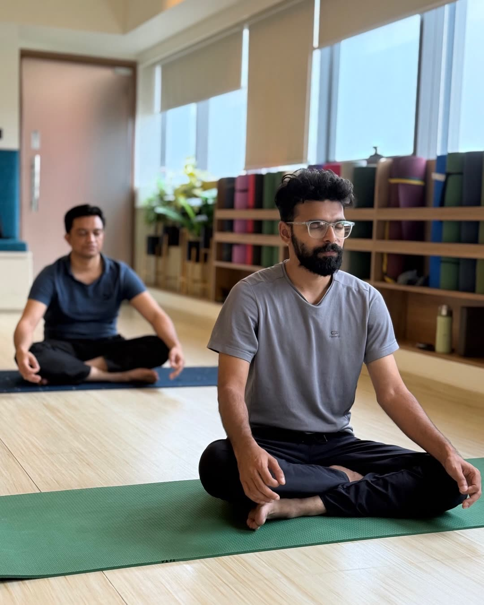
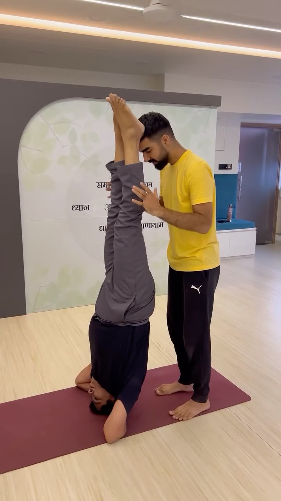
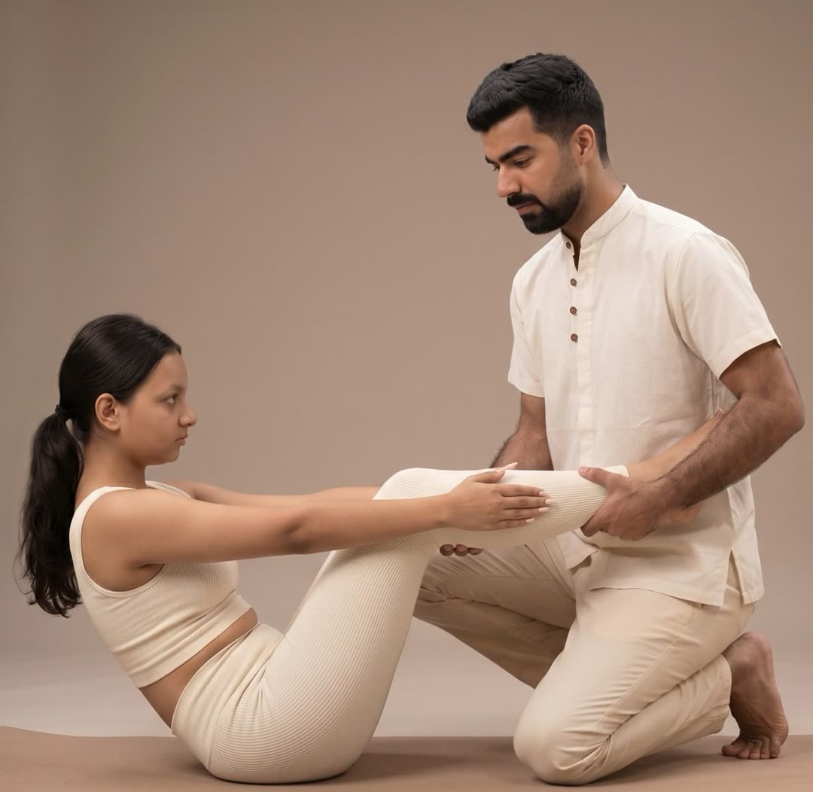
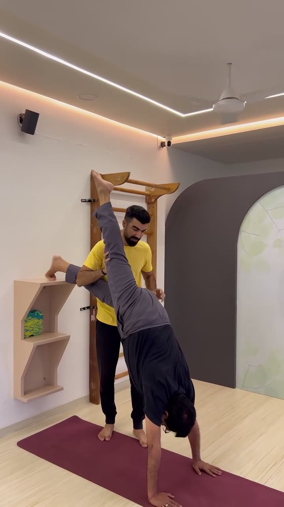
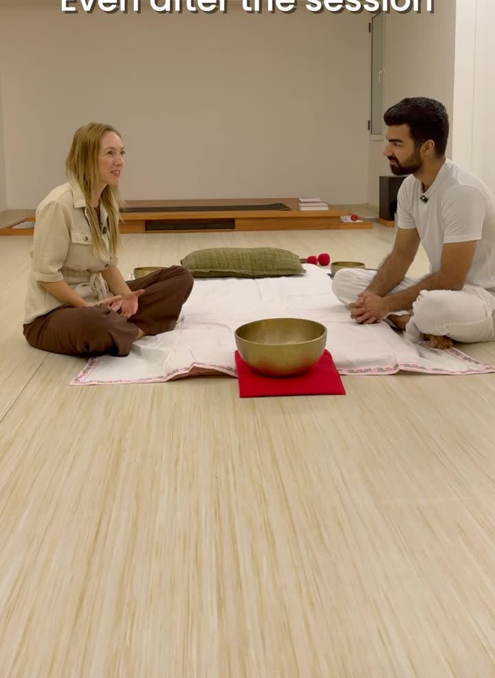
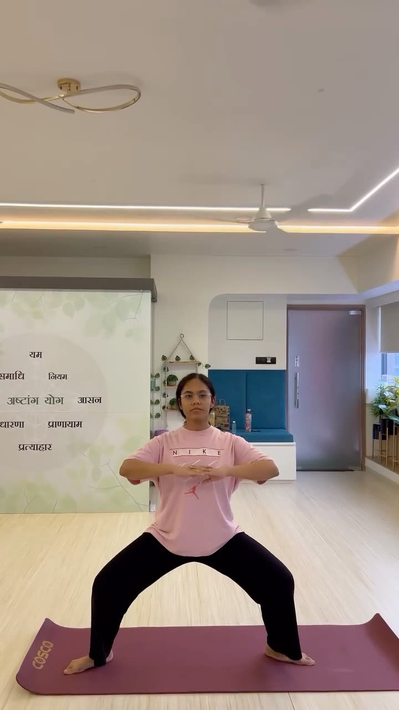
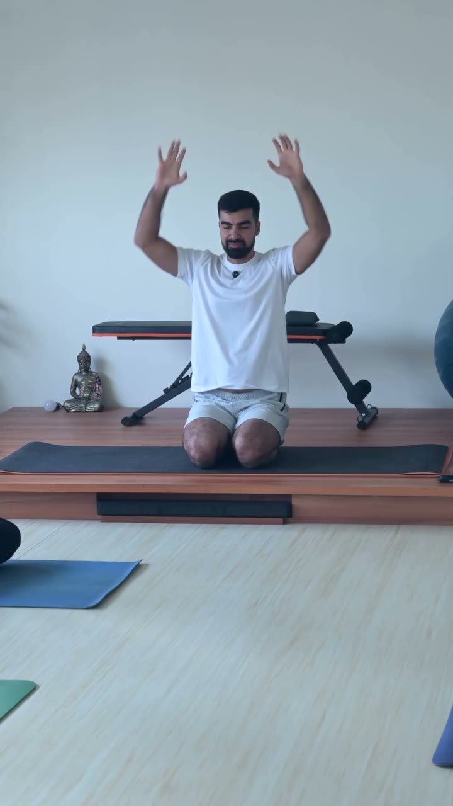
In their words
“I have been training with Kush Sir for 3 months now, and I am already seeing visible results in my body. Even in a group setting, he ensures everyone gets individual attention.”
Jinali Shah · 3 months ago“The atmosphere is peaceful, positive, and welcoming. The sessions are a beautiful combination of yoga, mindfulness, breathing, and relaxation.”
anup singh · 2 months ago“If you think yoga is just about stretching, breathing, and sitting peacefully with your eyes closed… wait till you meet our coach!😄”
Sneha Patel · 3 months ago“His guidance, patience, and expertise have helped me improve both physically and mentally. I now look forward to yoga every day.”
Yash Porwal · a year ago“Kush Sir's patience and expertise create an environment conducive to both learning and personal growth.”
Bhargavi Joshi · 2 years agoQuestions
I’m a complete beginner. Can I join?
Yes. Their guided sessions focus on strength, flexibility, breathwork and relaxation, and they describe them as perfect for beginners.
What are the batch timings?
Monday to Friday: mornings 6:45–7:45 and 8:00–9:00, evenings 5:15–6:15 and 6:30–7:30 (from their own batch post). Saturday morning 7:30–9:00. Closed on Sunday.
What is sound healing?
A session that combines sound healing with candle meditation, a space to disconnect and relax deeply. It’s the most mentioned thing in their Google reviews.
Who teaches the classes?
Kush Arora runs Healing Mystic and teaches the sessions. Reviewers mention personal attention even in a group setting.
Do you do corporate yoga?
Yes. For International Yoga Day they ran a session for a corporate team covering mobility, conscious breathing and a nervous-system reset.
Where is the studio?
A-607, Shilp Corporate Park on Rajpath Rangoli Road, Bodakdev.
A-607, Shilp Corporate Park
Shilp Corporate Park, A-607, Rajpath Rangoli Rd, Bodakdev, Ahmedabad 380059
Today